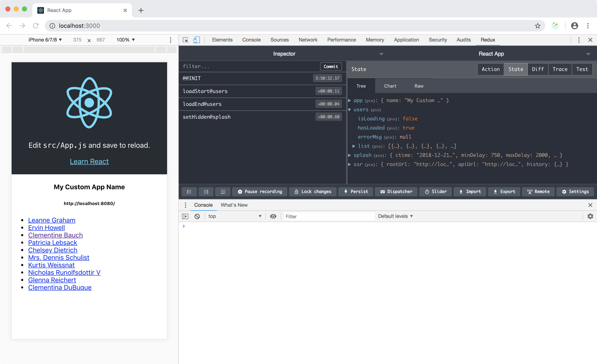
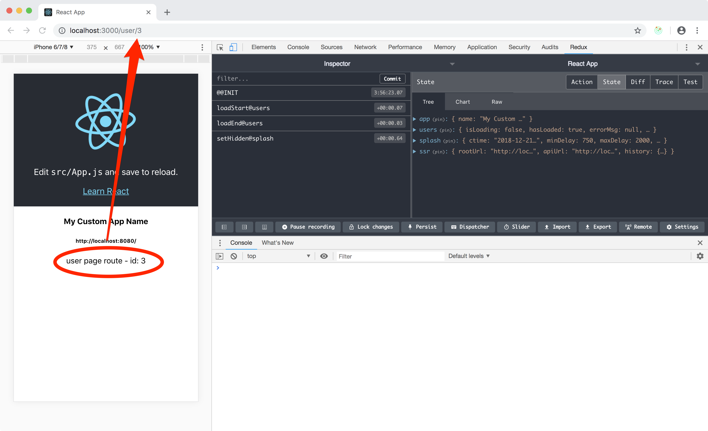

React Router - Add some routes
The next step consist in creating at least 2 pages in our app. The home page already contains a list of names and it's our page n.1, we are going to link each name to it's own personal page where we will show some more data.
Before you move forward I suggest you open /src/App.css and edit the height
of the default create-react-app header:
change:
.App-header {
min-height: 100vh;
to:
.App-header {
min-height: 270px;
This small change will make it more comfortable to read the people's list and the details page.
User details page
Now create a dummy UserPage container (we will work more on it later)
in /src/features/users/UserPage.container.js:
import React from 'react'
const UserPage = ({ match }) => (
<div>user page route - id: {match.params.id}</div>
)
export default UserPage
and remeber to export it from the feature's manifest
/src/features/users/index.js:
export const UserPage = loadable({
loader: () => import(/* webpackChunkName: "UserPage" */'./UserPage.container'),
loading: () => 'loading...'
})
Declare your routes
Open /src/App.js and compose your app's main routes declaration. Consider that react-router
is very flexible and allows you do deep nest routes. You don't have to write them all here!
import { Switch, Route } from 'react-router-dom'
import { Users, UserPage } from './features/users'
...
<Switch>
<Route exact path="/" component={Users} />
<Route path="/user/:id" component={UserPage} />
</Switch>
Link the user's pages
The very last step would be to use a Link component and transform your list of users
into a list of link in /src/features/users/Users.container.js:
import { Link } from 'react-router-dom'
...
render () {
...
return (
<ul style={styles.list}>
{this.props.list.map(user => (
<li key={`user-${user.id}`}>
<Link to={`/user/${user.id}`}>
{user.name}
</Link>
</li>
))}
</ul>
)
}
Run and test!
I strongly suggest you try to run your app in development mode first:
npm start
This will only execute Webpack and the default create-react-app pipeline.
The expected result is a splash screen that disappear almost right away
followed by your home page that consist now in a list of links.
Clicking any of the links you should be able to access the dummy user details page as shown in the following screenshots:
 
If this works without troubles you can test the production version where the server side rendering takes effect:
npm run start:prod
Remember that this may take a while to spin up as there are a few building steps that your machine need to go through!
The end result should be alike what you have seen in development, but without the splash screen as all the heavy lifting was performed in the backend!
This is not much for now, but the routing is in place and up for the job.
In the next chapter we are going to fetch more data and render a rich details page for each user.